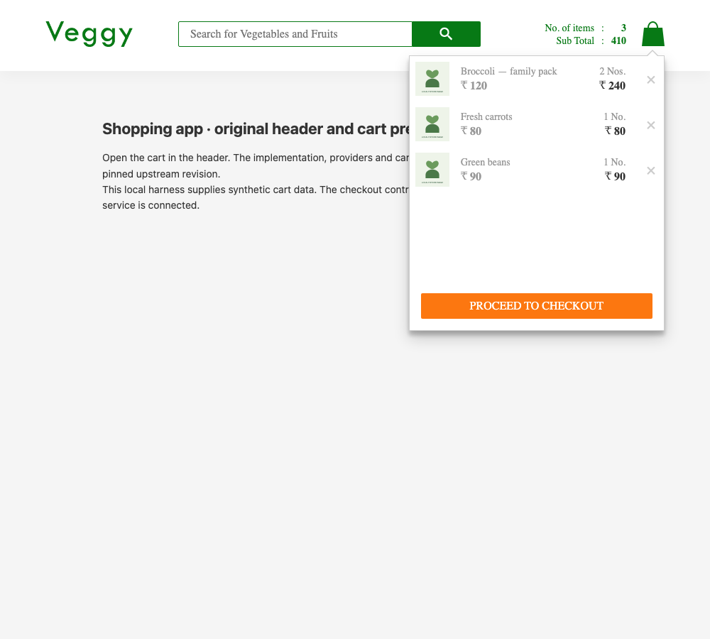
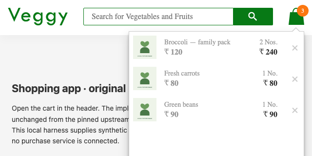
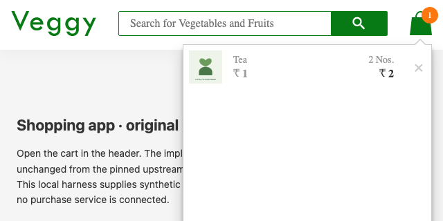

CONFIGURABLE SCENARIO · 2026-11-03T06:47:02.858Z
Shopping app · cart checkout
Checkout in the fixed cart popup must remain inside the popup and have its center in the viewport after permitted scrolling. Tests a pinned upstream component, not the deployed site.
Confirmed action failure
14 valid cases checked · 7 passed · 7 failed · 0 inconclusive. This evaluates one declared action rule, not overall component correctness.
Baseline: passed — The action is inside its declared region and receives pointer events at its center.



Confirmed in 3/3 fresh contexts
Exported replay: same failure verified by executing the saved Playwright test. No repair was attempted.
Reduction: 401 → 156 bytes, 3 probes. Best found under configured candidates and budget.
{
"products": [
{
"id": "cart-primary",
"name": "Tea",
"price": 1,
"quantity": 2,
"image": "/fixtures/compat-app/product.svg"
}
],
"viewportWidth": 640,
"viewportHeight": 320
}Reduction trail
[
{
"label": "Remove unrelated products",
"accepted": true,
"status": "failed",
"reason": "The action center is outside the viewport despite the declared viewport requirement.",
"bytes": 179
},
{
"label": "Short product name",
"accepted": true,
"status": "failed",
"reason": "The action center is outside the viewport despite the declared viewport requirement.",
"bytes": 158
},
{
"label": "Simplify price",
"accepted": true,
"status": "failed",
"reason": "The action center is outside the viewport despite the declared viewport requirement.",
"bytes": 156
}
]All supplied cases
| Case | Result | Evidence |
|---|---|---|
| Landscape phone viewport curated | failed | The action center is outside the viewport despite the declared viewport requirement. |
| Tall mobile viewport curated | passed | The action is inside its declared region and receives pointer events at its center. |
| Narrow phone viewport curated | passed | The action is inside its declared region and receives pointer events at its center. |
| Short desktop window curated | failed | The action center is outside the viewport despite the declared viewport requirement. |
| Long valid product name curated | passed | The action is inside its declared region and receives pointer events at its center. |
| Five cart products curated | passed | The action is inside its declared region and receives pointer events at its center. |
| Seeded viewport 1 generated | failed | The action center is outside the viewport despite the declared viewport requirement. |
| Seeded viewport 2 generated | passed | The action is inside its declared region and receives pointer events at its center. |
| Seeded viewport 3 generated | failed | The action center is outside the viewport despite the declared viewport requirement. |
| Seeded viewport 4 generated | passed | The action is inside its declared region and receives pointer events at its center. |
| Seeded viewport 5 generated | failed | The action center is outside the viewport despite the declared viewport requirement. |
| Seeded viewport 6 generated | failed | The action center is outside the viewport despite the declared viewport requirement. |
| Seeded viewport 7 generated | passed | The action is inside its declared region and receives pointer events at its center. |
| Seeded viewport 8 generated | failed | The action center is outside the viewport despite the declared viewport requirement. |
Source and scope
{
"kind": "existing-app-component",
"repository": "https://github.com/sivadass/react-shopping-cart",
"commit": "0e867f1caf6abd7114aab6ae704a2824064e84e0",
"revisionDate": "2021-06-16",
"license": "MIT",
"adaptation": "Unchanged header, cart preview, providers and styles mounted locally. API data initializes the original cart provider. Original remote icons are mirrored byte-for-byte in the browser recipe. This is not the complete deployed application; fonts use local fallback.",
"requirement": "A shopper must be able to reach checkout in the open fixed cart popup after scrolling.",
"assetHashes": [
{
"url": "https://res.cloudinary.com/sivadass/image/upload/v1493547373/dummy-logo/Veggy.png",
"sha256": "9fc32bdd513200af256c9143e756422d29ab697e660e99d3c1ec1679a89ad5e8"
},
{
"url": "https://res.cloudinary.com/sivadass/image/upload/v1493548928/icons/bag.png",
"sha256": "e8d0874e1903ce65927045467414502a9c9688ac9c636dd2e9872671533f4d98"
},
{
"url": "https://res.cloudinary.com/sivadass/image/upload/v1494756966/icons/search-green.png",
"sha256": "18a1ff07e44ba48adbed28a0016fe04d8c7dd98500a66dd8adeeeb3235476616"
},
{
"url": "https://res.cloudinary.com/sivadass/image/upload/v1494756030/icons/back.png",
"sha256": "0ac3cfd162d4ed1ceb5791a2d8017b9f824a00b33758cf32c6ca3a3abf95aa16"
},
{
"url": "https://res.cloudinary.com/sivadass/image/upload/v1494692031/icons/search.png",
"sha256": "c05d7a60d31efede3ea1791d33f8f7aaf88e77360722baf19a2aec4690c034e2"
}
]
}Chromium 156.0.8078.4 · Node v24.21.0 · seed 42 · 16.1s
Source fingerprint: ca0dd0e8b94d32707cac6d8ed29ebd4269dca359209ee1cdf7467de272f3439c. Per-file hashes and exact fixtures are in report.json.